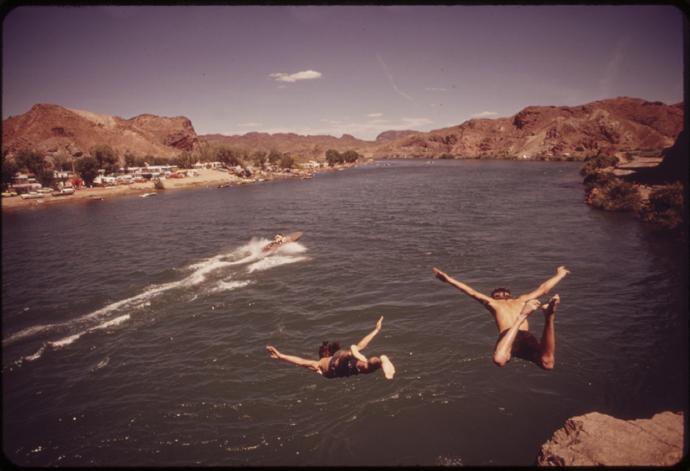
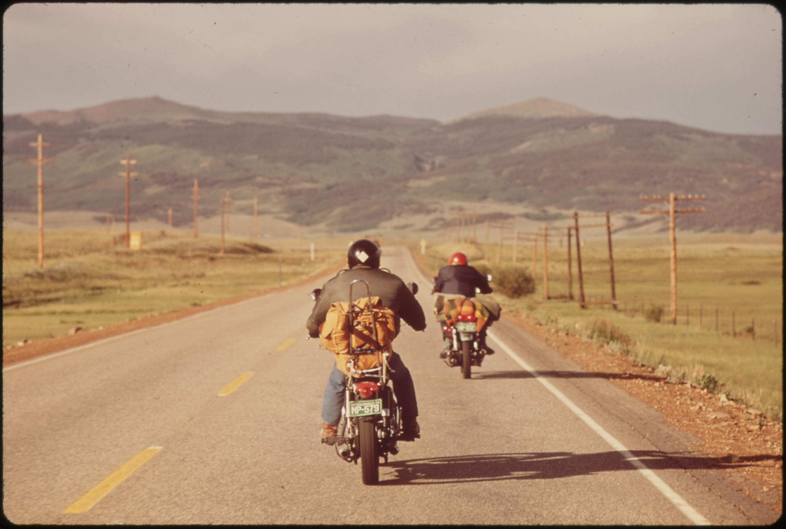

-
David Hiser

Aspen residents help U.S. Forest Service personnel plant seedlings at Marron Lake Campground, 12 miles North of Aspen. The native aspen trees in this popular camp area have been dying of a root disease. The USFS didn't have enough people for the replanting job so citizens volunteered their services. Snow covered peaks in background are the 14,000 foot maroon bells.
-
Charles O'Rear
Diving into the Colorado River at "Parker Strip," a favorite swimming spot of Southern Californians and Arizonians. Increasing salinity of the water may prove a drawback to future enjoyment.
-
Boyd Norton
Vacationers on motorcycles.